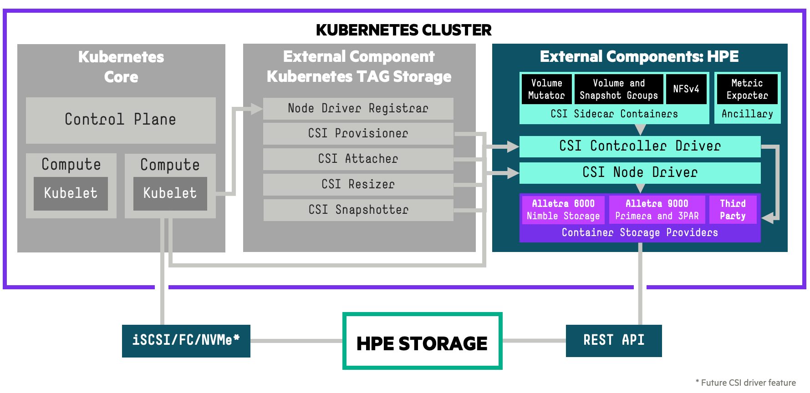

Introduction¶
A Container Storage Interface (CSI) Driver for Kubernetes. The HPE CSI Driver for Kubernetes allows you to use a Container Storage Provider (CSP) to perform data management operations on storage resources. The architecture of the CSI driver allows block storage vendors to implement a CSP that follows the specification (a browser friendly version).
The CSI driver architecture allows a complete separation of concerns between upstream Kubernetes core, SIG Storage (CSI owners), CSI driver author (HPE) and the backend CSP developer.

Tip
The HPE CSI Driver for Kubernetes is vendor agnostic. Any entity may leverage the driver and provide their own Container Storage Provider.
Table of Contents¶
Features and Capabilities¶
CSI gradually mature features and capabilities in the specification at the pace of the community. HPE keep a close watch on differentiating features the primary storage family of products may be suitable for implementing in CSI and Kubernetes. HPE experiment early and often. That's why it's sometimes possible to observe a certain feature being available in the CSI driver although it hasn't been announced or isn't documented.
Below is the official table for CSI features we track and deem readily available for use after we've officially tested and validated it in the platform matrix.
| Feature | K8s maturity | Since K8s version | HPE CSI Driver |
|---|---|---|---|
| Dynamic Provisioning | Stable | 1.13 | 1.0.0 |
| Volume Expansion | Stable | 1.24 | 1.1.0 |
| Volume Snapshots | Stable | 1.20 | 1.1.0 |
| PVC Data Source | Stable | 1.18 | 1.1.0 |
| Raw Block Volume | Stable | 1.18 | 1.2.0 |
| Inline Ephemeral Volumes | Beta | 1.16 | 1.2.0 |
| Volume Limits | Stable | 1.17 | 1.2.0 |
| Volume Mutator1 | N/A | 1.15 | 1.3.0 |
| Generic Ephemeral Volumes | GA | 1.23 | 1.3.0 |
| Volume Groups1 | N/A | 1.17 | 1.4.0 |
| Snapshot Groups1 | N/A | 1.17 | 1.4.0 |
| NFS Server Provisioner1 | N/A | 1.17 | 1.4.0 |
| Volume Encryption1 | N/A | 1.18 | 2.0.0 |
| Topology | Stable | 1.17 | Future |
| Storage Capacity Tracking | Stable | 1.24 | Future |
| Volume Health | Alpha | 1.21 | Future |
| Volume Populator | Beta | 1.24 | Future |
1 = HPE CSI Driver for Kubernetes specific CSI sidecar. CSP support may vary.
2 = Alpha features are enabled by Kubernetes feature gates and are not formally supported by HPE.
Depending on the CSP, it may support a number of different snapshotting, cloning and restoring operations by taking advantage of StorageClass parameter overloading. Please see the respective CSP for additional functionality.
Refer to the official table of feature gates in the Kubernetes docs to find availability of beta and alpha features. HPE provide limited support on non-GA CSI features. Please file any issues, questions or feature requests here. You may also join our Slack community to chat with HPE folks close to this project. We hang out in #NimbleStorage, #3par-primera and #Kubernetes, sign up at slack.hpedev.io and login at hpedev.slack.com.
Tip
Familiarize yourself with the basic requirements below for running the CSI driver on your Kubernetes cluster. It's then highly recommended to continue installing the CSI driver with either a Helm chart or an Operator.
Compatibility and Support¶
These are the combinations HPE has tested and can provide official support services around for each of the CSI driver releases. Each Container Storage Provider has it's own requirements in terms of storage platform OS and may have other constraints not listed here.
Note
For Kubernetes 1.12 and earlier please see legacy FlexVolume drivers, do note that the FlexVolume drivers are being deprecated.
HPE CSI Driver for Kubernetes 2.2.0¶
Release highlights:
- Support for Kubernetes 1.24 and Red Hat OpenShift 4.10
- Added Tolerations, Affinity, Labels and Node Selectors to Helm chart
- Improved automatic recovery for the NFS Server Provisioner
- Added multipath handling for Alletra 9000, Primera and 3PAR
- Volume expansion of encrypted volumes
Upgrade considerations:
- Existing encrypted volumes needs to be migrated to allow expansion
- Existing claims provisioned with the NFS Server Provisioner needs to be upgraded.
| Kubernetes | 1.21-1.241 |
|---|---|
| Helm Chart | v2.2.0 on ArtifactHub |
| Operators |
v2.2.1 on OperatorHub v2.2.1 via OpenShift console |
| Worker OS |
RHEL2 7.x & 8.x, RHCOS 4.8 & 4.10 Ubuntu 16.04, 18.04 & 20.04 SLES 15 SP2 |
| Platforms |
Alletra OS 6000 6.0.0.x - 6.1.0.x Alletra OS 9000 9.3.x - 9.5.x Nimble OS 5.0.10.x, 5.2.1.x, 6.0.0.x, 6.1.0.x Primera OS 4.3.x - 4.5.x 3PAR OS 3.3.x |
| Data protocol | Fibre Channel, iSCSI |
| Release notes | v2.2.0 on GitHub |
| Blogs | Updates and Improvements to HPE CSI Driver for Kubernetes (release blog) |
1 = For HPE Ezmeral Runtime Enterprise, SUSE Rancher, Mirantis Kubernetes Engine and others; Kubernetes clusters must be deployed within the currently supported range of "Worker OS" platforms listed in the above table. See partner ecosystems for other variations.
2 = The HPE CSI Driver will recognize CentOS, AlmaLinux and Rocky Linux as RHEL derives and they are supported by HPE.
HPE CSI Driver for Kubernetes 2.1.1¶
Release highlights:
- Support for Kubernetes 1.23
- Upstream CSI sidecar updates
- Improved LUN discoverability in certain environments
| Kubernetes | 1.20-1.231 |
|---|---|
| Worker OS | CentOS and RHEL 7.x & 8.x, RHCOS 4.6 & 4.8, Ubuntu 18.04 & 20.04, SLES 15 SP2 |
| Data protocol | Fibre Channel, iSCSI |
| Platforms |
Alletra OS 6000 6.0.0.x Alletra OS 9000 9.4.x Nimble OS 5.0.10.x, 5.1.4.200-x, 5.2.1.x, 5.3.0.x, 5.3.1.x, 6.0.0.x Primera OS 4.3.x, 4.4.x 3PAR OS 3.3.2 |
| Release notes | v2.1.1 on GitHub |
1 = For HPE Ezmeral Runtime Enterprise, Rancher and Mirantis Kubernetes Engine; Kubernetes clusters must be deployed within the currently supported range of "Worker OS" platforms listed in the above table. See partner ecosystems for other variations.
HPE CSI Driver for Kubernetes 2.1.0¶
Release highlights:
- Prometheus exporters
- Support for Red Hat OCP 4.8
- Support for Kubernetes 1.22
- Reliability/Stability enhancements
- Peer Persistence Remote Copy enhancements
- Volume Mutator enhancements
- Logging enhancements
| Kubernetes | 1.20-1.221 |
|---|---|
| Worker OS | CentOS and RHEL 7.x & 8.x, RHCOS 4.6 & 4.8, Ubuntu 18.04 & 20.04, SLES 15 SP2 |
| Data protocol | Fibre Channel, iSCSI |
| Platforms |
Alletra OS 6000 6.0.0.x Alletra OS 9000 9.3.x, 9.4.x Nimble OS 5.0.10.x, 5.1.4.200-x, 5.2.1.x, 5.3.0.x, 5.3.1.x, 6.0.0.x Primera OS 4.0.x, 4.1.x, 4.2.x, 4.3.x, 4.4.x 3PAR OS 3.3.1, 3.3.2 |
| Release notes | v2.1.0 on GitHub |
| Blogs |
HPE CSI Driver enhancements with monitoring and alerting (release blog) Get started with Prometheus and Grafana and HPE Storage Array Exporter (tutorial) |
1 = For HPE Ezmeral Runtime Enterprise, Rancher and Mirantis Kubernetes Engine; Kubernetes clusters must be deployed within the currently supported range of "Worker OS" platforms listed in the above table. See partner ecosystems for other variations.
HPE CSI Driver for Kubernetes 2.0.0¶
Release highlights:
- Support for HPE Alletra 6000 and 9000
- Host-based volume encryption
- Multitenancy for HPE Alletra 6000 and Nimble Storage
| Kubernetes | 1.18-1.211 |
|---|---|
| Worker OS | CentOS and RHEL 7.x & 8.x, RHCOS 4.6, Ubuntu 18.04 & 20.04, SLES 15 SP2 |
| Data protocol | Fibre Channel, iSCSI |
| Platforms |
Alletra OS 6000 6.0.0.x Alletra OS 9000 9.3.0 Nimble OS 5.0.10.x, 5.1.4.200-x, 5.2.1.x, 5.3.0.x, 5.3.1.x, 6.0.0.x Primera OS 4.0.x, 4.1.x, 4.2.x, 4.3.x 3PAR OS 3.3.1, 3.3.2 |
| Release notes | v2.0.0 on GitHub |
| Blogs |
HPE CSI Driver for Kubernetes now available for HPE Alletra (release blog) Multitenancy for Kubernetes clusters using HPE Alletra 6000 and Nimble (tutorial) Host-based Volume Encryption with HPE CSI Driver for Kubernetes (tutorial) |
1 = For HPE Ezmeral Runtime Enterprise, Rancher and Mirantis Kubernetes Engine; Kubernetes clusters must be deployed within the currently supported range of "Worker OS" platforms listed in the above table. See partner ecosystems for other variations.
Release Archive¶
HPE currently supports up to three minor releases of the HPE CSI Driver for Kubernetes.
Known Limitations¶
- Always check with the Kubernetes vendor distribution which CSI features are available for use and supported by the vendor.
- When using Kubernetes in virtual machines on VMware vSphere, OpenStack or similiar, iSCSI is the only supported data protocol for the HPE CSI Driver when using block storage.
- Ephemeral, transient or non-persistent Kubernetes nodes are not supported unless the
/etc/hpe-storagedirectory persists across node upgrades or reboots. The path is relocatable using a custom Helm chart or deployment manifest by altering themountPathparameter for the directory. - The CSI driver support a fixed number of volumes per node. Inspect the current limitation by running
kubectl get csinodes -o yamland inspect.spec.drivers.allocatablefor "csi.hpe.com". The "count" element contains how many volumes the node can attach from the HPE CSI Driver (default is 100). - The NFS Server Provisioner and each of the CSPs have known limitations listed separately.
iSCSI CHAP Considerations¶
If iSCSI CHAP is being used in the environment, consider the following.
CSI driver 1.3.0 and Above¶
CHAP is now an optional part of the initial deployment of the driver with parameters passed to Helm or the Operator. For object definitions, the CHAP_USER and CHAP_PASSWORD needs to be supplied to the csi-node-driver. The CHAP username and secret is picked up in the hpenodeinfo Custom Resource Definition (CRD). The CSP is under contract to create the user if it doesn't exist on the backend.
CHAP is a good measure to prevent unauthorized access to iSCSI targets, it does not encrypt data on the wire. CHAP secrets should be at least twelve charcters in length.
CSI driver 1.2.1 and Below¶
In version 1.2.1 and below, the CSI driver did not support CHAP natively. CHAP must be enabled manually on the worker nodes before deploying the CSI driver on the cluster. This also needs to be applied to new worker nodes before they join the cluster.
Kubernetes Feature Gates¶
Different features mature at different rates. Refer to the official table of feature gates in the Kubernetes docs.
The following guidelines appliy to which feature gates got introduced as alphas for the corresponding version of Kubernetes. For example, ExpandCSIVolumes got introduced in 1.14 but is still an alpha in 1.15, hence you need to enable that feature gate in 1.15 as well if you want to use it.
Kubernetes 1.13¶
--allow-privilegedflag must be set to true for the API server
Kubernetes 1.14¶
--allow-privilegedflag must be set to true for the API server--feature-gates=ExpandCSIVolumes=true,ExpandInUsePersistentVolumes=truefeature gate flags must be set to true for both the API server and kubelet for resize support
Kubernetes 1.15¶
--allow-privilegedflag must be set to true for the API server--feature-gates=ExpandCSIVolumes=true,ExpandInUsePersistentVolumes=truefeature gate flags must be set to true for both the API server and kubelet for resize support--feature-gates=CSIInlineVolume=truefeature gate flag must be set to true for both the API server and kubelet for pod inline volumes (Ephemeral Local Volumes) support--feature-gates=VolumePVCDataSource=truefeature gate flag must be set to true for both the API server and kubelet for Volume cloning support
Kubernetes 1.19¶
--feature-gates=GenericEphemeralVolume=truefeature gate flags needs to be passed to api-server, scheduler, controller-manager and kubelet to enable Generic Ephemeral Volumes